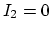
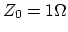
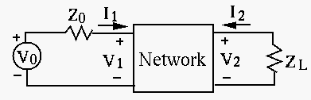
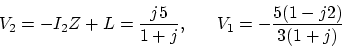

The load of a voltage soruce of
is shown in the figure, where , , ,
. Is the load capacitive (
) or inductive
()? Find the power factor, the apparent power, the real power and
the reactive power.
Solution:
The load is inductive as .
power factor is
,
the apparent power is
,
the real power is
the reactive power is
To improve the power factor of the circuit above to 0.9, a shunt
capacitor is added. What should the capacitance be? What should be
if the power factor is required to be 1?
Solution:
Adding a shunt capacitor with impedance
(),
the overall load impedance is
For the power factor to be 0.9, this impedance need to have a phase angle
, and we need to have:
For the power factor to be 1, we need to have
i.e.,
Find the Z-model and Y-model of the circuit shown in the figures, by
assuming one of the two known variables (currents or voltages) is zero at
a time. Then verify your results by checking whether
.
Solution:
For the Z-model,
item Assume  (open-circuit), then
,
Assume (open-circuit), then
,
For the Y-model,
Assume (short-circuit), then
,
Assume (short-circuit), then
,
verify:
The parameters of the Y-model of the two-port network are ,
, , and . The voltage source is ,
, . Find variables , , , .
(Hint: refer to Method 1 in the example shown in the
web notes)

Solution:
Convert Y-model to Z-model:
Setup additional equations:
Find and :
These equations can be solved to get
Find , :

Repeat the previous problem but this time use Thevenin's theorem to find
across load . (Hint: refer to Method 2 in the example shown in the
web notes)
Solution:
First, find when the voltage souce is short circuit:
Equating
to , we get
, i.e., .
Substituting into , we get , i.e.,
.
Second, find when the load is open circuit, i.e., :